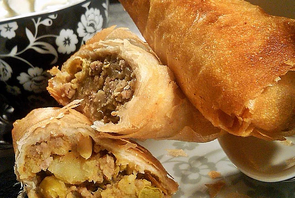

Beef Samosa

Ingredients
- 2 large potatoes, peeled
- 1 cup frozen peas, thawed
- 2 tablespoons vegetable oil
- ½ teaspoon cumin seeds
- 1 bay leaf, crushed
- 2 large onions, finely chopped
- 1 pound ground beef
- 4 cloves garlic, crushed
- 1 tablespoon minced fresh ginger root
- ½ teaspoon ground black pepper
- 1 ½ teaspoons salt
- 1 teaspoon ground cumin, coriander, turmeric, chillipowder
- ½ teaspoon ground cinnamon, cardamom
- 2 tablespoons chopped cilantro, green chile peppers
- 1 quart oil for deep frying
- 1 pound package phyllo dough
Steps
- Bring a medium saucepan of lightly salted water to a boil. Stir in potatoes and peas. Cook until potatoes are tender but still firm, about 15 minutes. Drain, mash together and set aside.
- In a large saucepan over medium high heat, heat the oil. Brown cumin seeds and bay leaf. Mix in onions and ground beef. Cook until beef is evenly brown and onions are soft, about 5 minutes. Mix in garlic, fresh ginger root. Season with black pepper, salt, cumin, coriander, turmeric, chili powder, cinnamon and cardamom. Stir in the mashed potato mixture. Remove from heat and chill in the refrigerator for 1 hour, or until cool.
- Heat oil in a large, heavy saucepan over high heat.
- Mix cilantro and green chile peppers into the potato and beef mixture. Place approximately 1 tablespoon of the mixture onto each phyllo sheet. Fold sheets into triangles, pressing edges together with moistened fingers.
- In small batches, fry until golden brown, about 3 minutes. Drain on paper towels and serve warm.